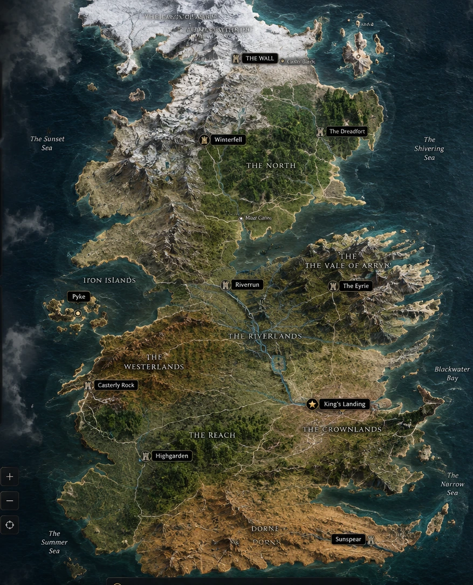

TWO ERAS. ONE REALM.
EXPLORE WESTEROS
From the fall of the Mad King to the rise of the Targaryens —
discover the houses, dragons, characters and cities that shaped the realm.
THE WORLD AT A GLANCE
The Westeros & Essos Atlas
Explore the world through a detailed interactive atlas. Switch between Westeros and Essos to change the map, then select any marked city, stronghold, or landmark to reveal its location and lore.
